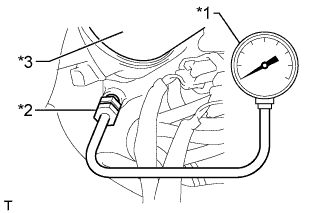

СИСТЕМА СМАЗКИ (для моделей без DPF) > ПРОВЕРКА БЕЗ СНЯТИЯ С АВТОМОБИЛЯ |
| 1. ПРОВЕРЬТЕ КАЧЕСТВО МАСЛА |
Проверьте моторное масло на старение, наличие воды, обесцвечивание и разжижение.
Если в ходе осмотра установлено, что масло имеет низкое качество, замените моторное масло и фильтрующий элемент масляного фильтра (Нажмите здесь).
| 2. ПРОВЕРЬТЕ УРОВЕНЬ МОТОРНОГО МАСЛА |
Прогрейте двигатель, затем остановите его и подождите 5 минут. Уровень моторного масла должен находиться между отметками низкого и максимального уровней на щупе проверки уровня масла.
Если уровень низкий, проверьте, нет ли утечек, и долейте масло до максимальной отметки.
| 3. ПРОВЕРЬТЕ ДАВЛЕНИЕ МОТОРНОГО МАСЛА |
Снимите контактный датчик давления моторного масла (Нажмите здесь).
|  |
Установите датчик давления масла с помощью переходника.
| *1 | Датчик давления масла |
| *2 | Переходник |
| *3 | Масляный фильтр |
Прогрейте двигатель.
Измерьте давление моторного масла.
| Условие | Заданные условия |
| Холостой ход | 29 кПа (0,3 кгс/см2, 4,2 фунтов на кв. дюйм) или более |
| 3000 об/мин | 245 кПа (2,5 кгс/см2, 36 фунтов на кв. дюйм) или более |
Снимите датчик давления масла и переходник.
Установите контактный датчик давления моторного масла (Нажмите здесь).